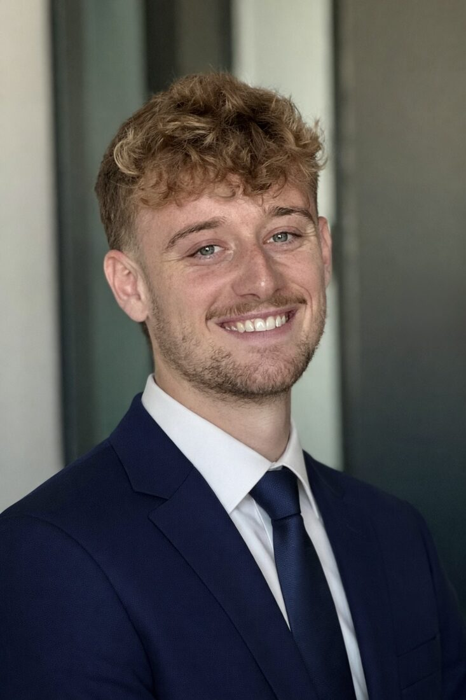
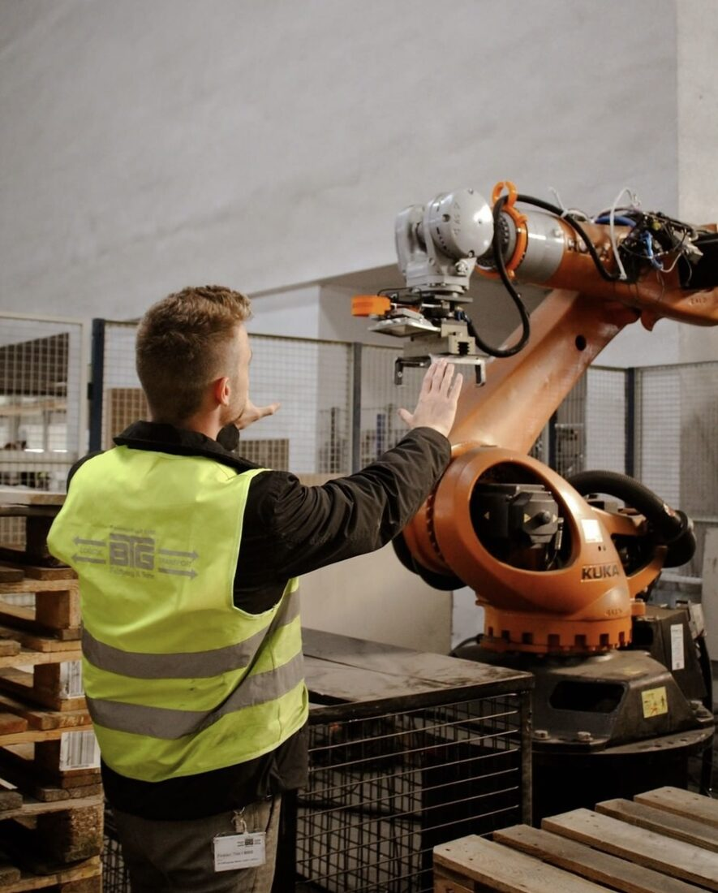
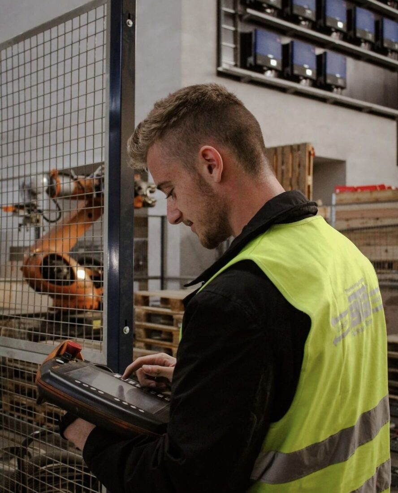

GenAI-Anwendungen & Agenten
Chatbots, digitale Assistenten und agentische Systeme, die Dokumente und Datenbanken tatsächlich verstehen – inklusive Anbindung an CRM und bestehende Fachsysteme, auch On-Premise.
GenAI Entwickler & Berater · Köln
Ich entwickle GenAI- und Agentenanwendungen für öffentliche Verwaltung, Finanz- und Versicherungswirtschaft – von der Prozessanalyse über den PoC bis zur produktionsnahen Umsetzung. Davor drei Jahre Robotik: unter anderem ein lernendes, kamerabasiertes System, das heute Paletten sortiert.

Leistungen
Technische Umsetzung und fachliche Übersetzung in einer Person – das spart in KI-Projekten meist die längste Schleife.
Chatbots, digitale Assistenten und agentische Systeme, die Dokumente und Datenbanken tatsächlich verstehen – inklusive Anbindung an CRM und bestehende Fachsysteme, auch On-Premise.
Antrags- und Prüfprozesse, Sales-Abläufe, Verwaltungsvorgänge: erst analysieren, wo KI wirklich trägt, dann automatisieren – messbar statt demohaft.
Bildverarbeitung, Roboterzellen und Anlagenintegration – vom Konzept über die Simulation bis zur Inbetriebnahme in der Halle.
Werdegang
Der rote Faden: Prozesse verstehen, Technik dahinter bauen, Menschen mitnehmen.
01/2024 – heute
Köln
Capgemini
11/2023 – 01/2024
Köln
Spiratec AG
10/2020 – 07/2023
Bocholt
BTG Feldberg & Sohn GmbH & Co. KG
Weitere Stationen
Projekte
Zwei öffentlich referenzierbare KI-Projekte und das Robotersystem, mit dem alles angefangen hat.
Öffentliche Verwaltung
KI-gestützte Anwendung für die Landesverwaltung Nordrhein-Westfalen. Mitarbeit an Konzeption und Entwicklung im Rahmen der Beschleunigung von Verwaltungs- und Serviceprozessen.
International ausgezeichnet
KI-Plattform im Bundesumfeld – entwickelt für dokumenten- und datenbankbasierte Abläufe, teils im On-Premise-Betrieb. Das Projekt wurde international ausgezeichnet.

Bachelorarbeit & Produktivbetrieb
Ein kamerabasiertes Robotersystem, das Paletten nach Typ und Zustand erkennt und sortiert. Entstanden als Abschlussarbeit bei BTG Feldberg & Sohn – und anschließend bis in den laufenden Betrieb weiterentwickelt, inklusive Aufbau des Teams, das daran weiterarbeitet.
Kenntnisse
Akademische Laufbahn
Sprachen
Über mich
Aufgewachsen bin ich zwischen Boxmeer, Salamanca, Bendigo, Milton Keynes und Goch – fünf Länder vor dem Abitur. Was davon geblieben ist: Ich finde mich schnell in fremde Kontexte ein und übersetze zwischen Welten, die sonst aneinander vorbeireden. In KI-Projekten ist das meistens die Fachabteilung und die Entwicklung.
Technisch komme ich aus der Mechatronik. Mein erstes größeres Projekt stand in einer Halle in Bocholt und hat Paletten sortiert – da lernt man schnell, dass ein System erst zählt, wenn es im Schichtbetrieb läuft. Denselben Anspruch nehme ich mit in GenAI-Projekte: nicht die beeindruckendste Demo, sondern die Lösung, die der Fachbereich am Montag wirklich benutzt.
Außerhalb der Arbeit: eigene Startup-Projekte rund um den Vertrieb von KI-Lösungen inklusive Sprach-KI, dazu Volleyball, Fitness, Wandern, Motorrad und mehr Hörbücher, als in ein Jahr passen.

Ob konkreter Use Case, ein PoC, der produktiv werden soll, oder erst einmal die Frage, ob KI an der Stelle überhaupt trägt – schreiben Sie mir gern.